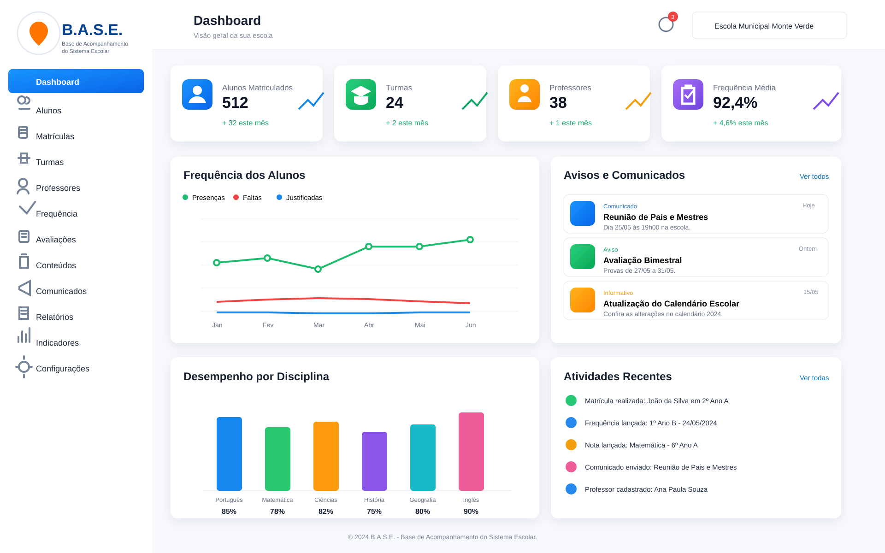
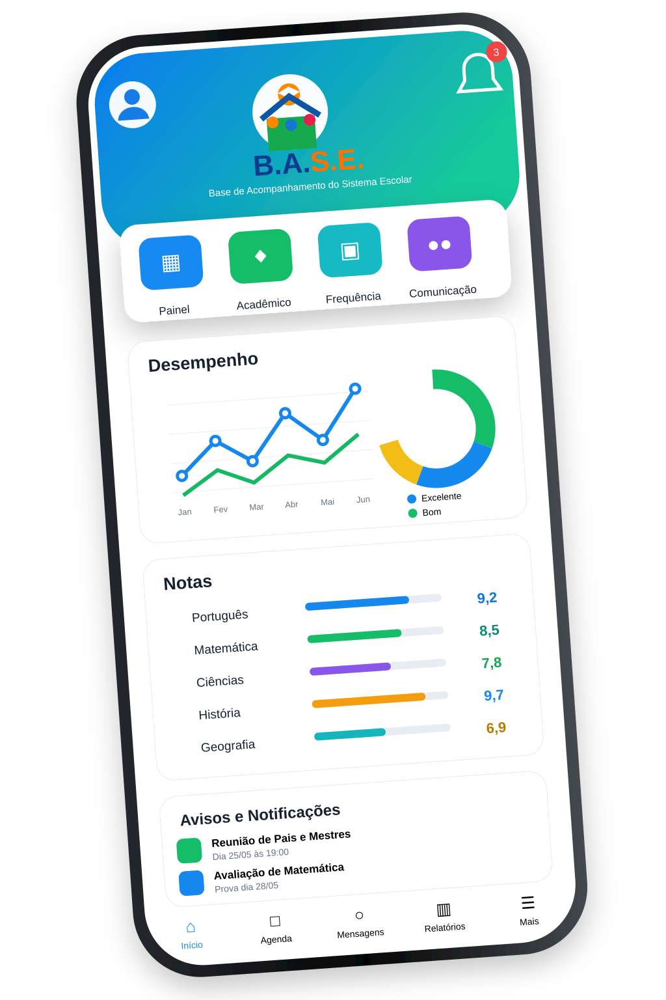

Organização
Informações escolares reunidas em um só lugar.
O B.A.S.E. — Base de Acompanhamento do Sistema Escolar — reúne informações acadêmicas, comunicação e gestão em um único ambiente.
Conheça o projeto
O B.A.S.E. foi pensado para facilitar a rotina escolar, melhorar a comunicação e tornar o acompanhamento dos alunos mais simples.
Informações escolares reunidas em um só lugar.
Avisos e informações entre escola e responsáveis.
Notas, frequência e desempenho de forma visual.
Painel para acompanhar alunos, turmas, professores, frequência, comunicados, relatórios e indicadores.
Aplicativo para acompanhar desempenho, notas, avisos e informações acadêmicas.
